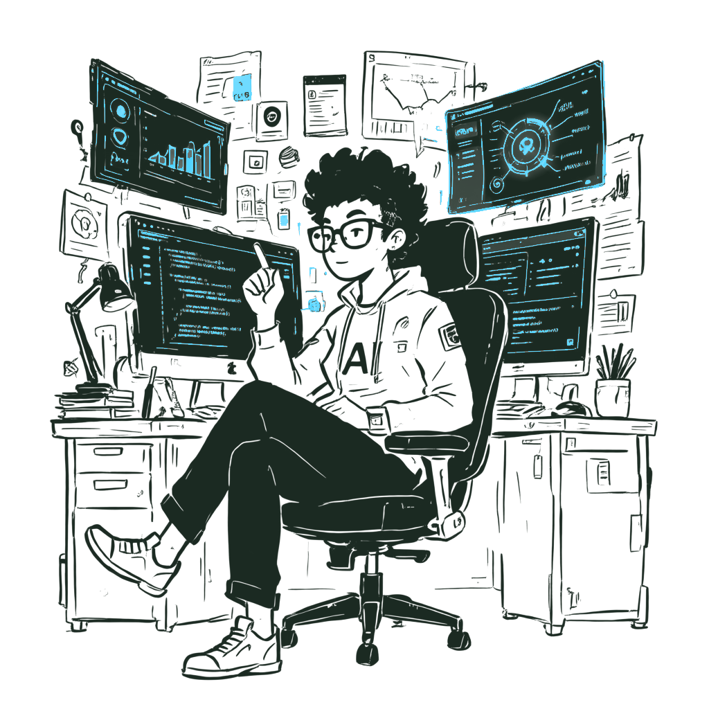

DHRUV GARG
Building intelligent systems that see, understand, and create. Translating complex research papers into optimized, production-ready code. Precision engineering meets raw mechanical capability.
ENTER WORKSPACE arrow_forward
↓
SEARCHLIGHT
PROTOCOL
A novel coarse-to-fine computer vision pipeline designed for efficient small object detection in high-resolution (2K/4K) aerial imagery. Intelligently slices regions of interest, skipping 80%+ of empty backgrounds.

PIXEL
QUEUE
Vision Intelligence Infrastructure. A high-performance, async control panel for human-in-the-loop AI annotation using decoupled ML microservices and robust task queues.
NEURAL
CANVAS
Real-time neural style transfer implementation that generates stylized images using a feed-forward CNN trained with perceptual loss via VGG-16.


PYGOG
CLI
Agentic Google Workspace CLI for natural-language task orchestration, intelligent tool routing, and multi-service automation.
JOURNEY SO FAR
Foundation
Built confidence with predictive ML — house price prediction, training loops, and evaluation.
Vision
Moved into computer vision — depth estimation and architecture decisions.
Creative
Explored GAN-based generation — training dynamics and instability.
Product
Built Neural Canvas — style transfer shipped to Hugging Face as a tool.
Systems
Investing in full-stack, cloud deployment, and DevOps to build complete AI systems.
SKILLS & STACK
A dynamic, high-fidelity conceptual blueprint of my engineering stack and domain expertise.
METRICS & TELEMETRY
Telemetry Terminals
Init
Message
I ship PyTorch models to production. Looking for meaningful AI and Full stack internships and research work where I can do that at scale.